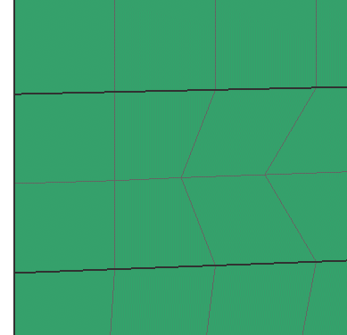

修改节点位置
使用以下命令来修改网格中单个节点的位置：
-
使用节点拖动 命令，，可以以交互方式重定位与 2D 单元关联的节点
-
使用节点对齐
 命令，可以将一个或多个节点与通过选择两个节点来定义的直线对齐。如果您需要对齐节点以方便创建载荷条件或边界条件，则该选项非常有用。在使用节点对齐对齐所选的节点时，软件会调整与这些节点相关联的单元边界
命令，可以将一个或多个节点与通过选择两个节点来定义的直线对齐。如果您需要对齐节点以方便创建载荷条件或边界条件，则该选项非常有用。在使用节点对齐对齐所选的节点时，软件会调整与这些节点相关联的单元边界 -
使用节点修改坐标 命令，可以通过修改节点相对于特定坐标系的坐标来移动所选节点
下图显示节点对齐如何影响网格。
